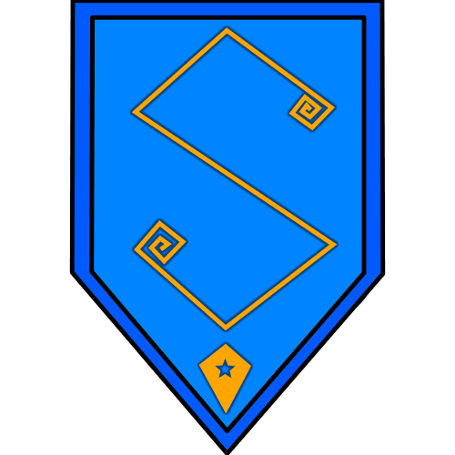

-
Undiscovered Game Studios
Started by me and a few freinds back in 2013, Undiscovered Game Studios started as a way for us to get away from high school, and actually learn something in a day (shocking idea, I know)! We would pick a thing we wanted to build, build it (with help from Google), then teach everyone else in the group how we did it. It was awesome!
Most of those founding members have moved on now, but, call me nostalgic, I still quite like this brand. I like it so much, I intend to start my own game development studio upon it. The goal is to have it be profitable before I graduate collage, and that is a goal I intend to acheive. -
Valhalla Fell

Valhalla Fell is the flagship title for Undiscovered Game Studios. The project is ambitious, some may say foolhardy, but I disagree. To my mind, if I can pull this off, everything else coming after making the first game for Undiscovered Game Studios is not just possible, but feasable and resonable. If Valhalla Fell is a success, I know I can be a success in this field too. Nay-say all you like; I'm one stubborn bastard though, good luck! To everyone interested in aschewing sinicism, click through the link to learn more about the project note: the page is still super-early beta right now, please forgive its roughness